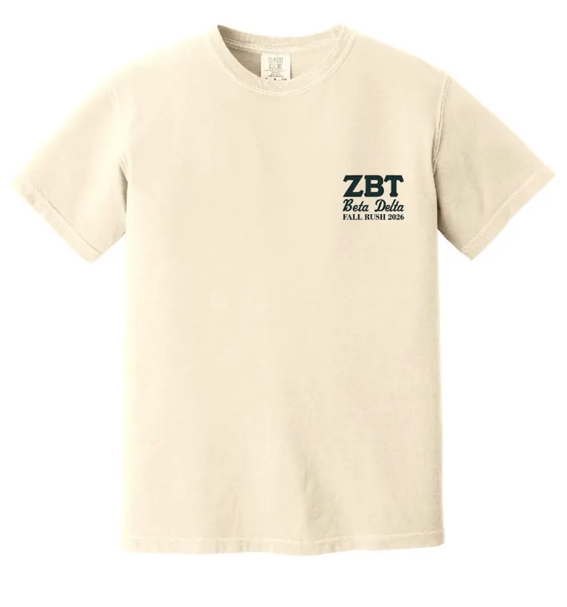

Recruitment Director
Emmet Bushue
Glen Ridge, New Jersey
Emmet previously served as Social Chair and helps prospective members meet a broad group of brothers while getting a realistic sense of membership.
View Emmet’s profile →
Fall 2026
Meet the chapter, ask direct questions and decide whether Beta Delta belongs in your Rutgers experience.
Led by Emmet Bushue and Brandon Sternthal
Fall 2026 Recruitment
Emmet and Brandon coordinate events, communication and follow-up with prospective members.
Recruitment Director
Glen Ridge, New Jersey
Emmet previously served as Social Chair and helps prospective members meet a broad group of brothers while getting a realistic sense of membership.
View Emmet’s profile →
Recruitment Director
West Orange, New Jersey
Brandon works alongside Emmet to organize the process, maintain communication and identify students prepared to contribute to the chapter.
View Brandon’s profile →Start Here
The form gives the Recruitment Directors the information needed to keep you updated about Fall 2026 events and opportunities to meet the chapter.
Complete the Interest FormRecruitment in Motion
Watch with sound to see highlights from two recent recruitment cycles.
Campus events, travel and chapter experiences from Beta Delta’s Fall 2025 recruitment cycle.
A look at the winter and spring experiences that helped prospective members meet the chapter.


Fall Rush 2026
The Fall 2026 recruitment shirt features 106 College Avenue, connecting the recruitment campaign to one of the most important milestones in Beta Delta’s recent history.
The front carries a simple Beta Delta mark; the back turns the house into a visual representation of the chapter’s next era.
Read the House StoryThe Process
Prospective members need time to see how brothers interact, understand expectations and decide whether Beta Delta fits the Rutgers experience they want.
The chapter looks for students who will participate, respect others, take responsibility and leave the organization stronger for the classes that follow them.
Ask direct questions about time, finances, new member education, housing, academics and chapter culture. The strongest fit comes from honest conversations.
What to Expect
Seeing the chapter in more than one setting gives you a more accurate picture.
Speak with officers, newer members and older brothers rather than judging the chapter through one person.
Understand the expectations before making a commitment.
A fraternity should complement your academic and personal goals.
Chapter Momentum
Beta Delta set chapter recruitment records in Fall 2024 and again in Fall 2025. That growth has been accompanied by stronger alumni involvement, expanded leadership opportunities and the establishment of 106 College Avenue.
In 2025, Zeta Beta Tau recognized Beta Delta with the Edwin B. Meissner Award for Most Improved Chapter. New members have an opportunity not only to join, but to help determine what the chapter becomes next.
Express InterestCommon Questions
No. Recruitment is designed to give students enough time to meet brothers from different classes.
Events vary, but the purpose is consistent: meet brothers, visit the chapter and have honest conversations.
Students who will participate, take responsibility, treat others well and add something positive to Beta Delta.
Ask about time commitments, new member education, dues, housing, academics and everyday chapter life.